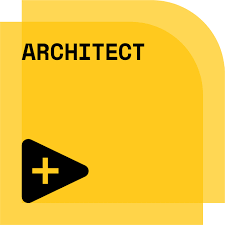
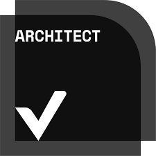
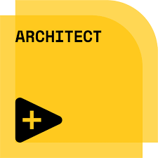
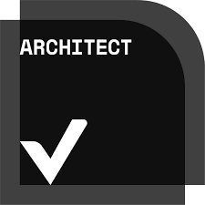

India LabVIEW User Group - M17
Modernizing LabVIEW CI/CD with Containers
Containers for LabVIEW Developers. From Desktop to Pipeline.
Presenter
Venkatesh Perumal Pranay Chandragiri
Solutions Architect | LabVIEW Champion, CLA, CTA, CPI
 



21st Feb 2026
Soliton Technologies
Agenda
What we'll cover today
CI/CD Fundamentals
Quick Overview
Traditional VM-based workflows and their challenges
Introduction to Containers
What are containers and how they differ from VMs
LabVIEW Containers
Official NI images, headless mode, and capabilities
Demo
GitHub Actions CI/CD with LabVIEW containers in 15 mins
CI/CD Workflow
How automation pipelines work with self hosted runner and VMs
Continuous Integration/Continuous Deployment (CI/CD) automates building, testing, and deploying code.
Containers provide fast, consistent, and portable environments that streamline this entire pipeline.

CI/CD Workflow
How automation pipelines work with self hosted runner and VMs

What Is a Container?
A container is a lightweight, portable, isolated execution environment that packages an application with all its dependencies, libraries, and configuration files.
Containers share the host system's OS kernel but run in isolated user spaces, making them faster and more efficient than virtual machines.
Lightweight
Containers share the host OS kernel, using significantly fewer resources than VMs.
Portable
Run consistently across any environment—development, testing, or production.
Isolated
Each container runs independently without affecting others on the same host.
Think of containers as standardized shipping containers for software—same format, works everywhere.
What Goes Inside
Base OS (User Space)
Windows, Ubuntu, or Mac
App Binaries
LabVIEW EXE / Code / Build Artifacts
Runtime Ecosystem
NI-RTE, Driver APIs, .NET/Python
Hardware Resources
CPU, RAM, DAQ hardware
Host OS Kernel
Core Windows or Linux Kernel
Architecture: VMs vs Containers
Machine Virtualization
OS
OS
OS
Containers
Key Architectural Difference
Virtual Machines require a full Guest OS for each instance, managed by a Hypervisor. Containers share the host Operating System kernel through the Container Engine, making them significantly lighter and faster.
Containers vs. Virtual Machines
| Attribute | Virtual Machines (VMs) | Containers |
|---|---|---|
| Kernel | Full Guest OS Kernel | Shares Host OS Kernel |
| Size | Gigabytes (Heavy) | Megabytes (Lightweight) |
| Startup | Minutes (Slow) | Seconds (Instant) |
| Density | Low (Few per host) | High (Many per host) |
A House (VM)
Independent foundation and plumbing. Isolated but expensive to build.
An Apartment (Container)
Shared infrastructure. Fast to move in, private living area.
Docker Desktop & Docker Engine
Docker Engine
The core runtime that creates and manages containers. It's the underlying technology that runs containers on your machine.
Container Runtime
Executes and manages container lifecycle
Image Management
Builds, stores, and distributes images
Networking & Storage
Handles container networking and volumes
Docker Desktop
A complete application that includes Docker Engine plus a user-friendly interface and developer tools.
Graphical Interface
Visual dashboard for managing containers
Developer Tools
Kubernetes, Docker Compose, extensions
Cross-Platform
Works on Windows, macOS, and Linux
The Relationship
Docker Desktop is the easiest way to get started — it installs Docker Engine and provides a GUI for managing containers, images, and volumes. For LabVIEW developers, Docker Desktop simplifies the entire container workflow.
Docker Image and Docker Container
Docker Image
- Immutable: Read-only template.
- Layered: Built from Dockerfile instructions.
- Stored: In registries (Docker Hub, etc.).
- Shareable: Push/pull across teams.
Docker Container
- Runnable: Active process from image.
- Writable: Has its own filesystem layer.
- Multiple: Many containers from one image.
- Ephemeral: Can be stopped and deleted.
LabVIEW Containers: Official NI Images
Headless automation for modern CI/CD pipelines
What Are LabVIEW Container Images?
Pre-built, headless LabVIEW container images designed specifically for automation, CI/CD workflows, and scripted execution using the LabVIEW Command Line Interface (LabVIEWCLI).
Linux Base
Built on stable Ubuntu LTS for reliability and wide ecosystem support
Windows Base
Built on Windows Server 2022 LTSC for enterprise-grade compatibility
Official Repository
ni/labview-for-containers
What's Inside Each Image
Core Components
- LabVIEW Runtime and development environment
- VI Analyzer for static code analysis
- LabVIEWCLI for automation scripting
CLI Automation Support
- Running VIs programmatically
- VI Diff and comparison operations
- Mass compile operations
- Project analysis and reporting
Important: Headless-Only Execution
All LabVIEWCLI commands must end with the -Headless flag
Headless Mode: Automation-First Design
Optimized for CI/CD, not interactive development
What Headless Mode Enables
No Activation Required
Run LabVIEW without license activation or UI dependencies
Pure Automation
Scripted execution, analysis, and testing only
CI/CD Optimized
Perfect for GitHub Actions, GitLab CI, Jenkins, Azure DevOps
What Headless Mode Restricts
No Development Actions
Cannot create, edit, or modify LabVIEW code
No GUI Interaction
No front panel display or user interface
Read-Only Philosophy
Execution and analysis only—no code modification
The Perfect CI/CD Citizen
Headless containers guarantee repeatable, auditable, and secure automation workflows—ideal for automated testing, build pipelines, and continuous integration systems.
Common Use Cases & Getting Started
Real-World Applications
CI/CD Integration
Execute LabVIEW automation in GitHub Actions, GitLab CI, Azure DevOps, or Jenkins
Automated Testing
Run scripted VI execution workflows and test suites
Static Analysis
Mass compile and code quality analysis pipelines
Build Automation
Build artifacts using LabVIEWCLI in containerized systems
Documentation & Resources
For comprehensive usage instructions, customization guides, CI examples, and container image downloads:
Official GitHub Repository
ni/labview-for-containers
Mass Compiling LabVIEW VIs in Container
Understanding volume mounting and command structure
Generic Syntax
--rm
Auto-remove container after execution
-v
Mount host directory into container
image-name
Container image to run
bash -c
Execute command inside container
Real Example: Mass Compile
Volume Mounting
C:\ni
Host Windows directory with VI files
/labview
Container Linux path (mapped)
Image Used
nationalinstruments/labview:latest-linux
Operation
MassCompile on /labview directory
Headless Flag
Required for containerized execution
Running VI Analyzer in Containers
Automated code analysis and quality checks
Generic Syntax
--rm
Auto-remove container after execution
-v
Mount host directory into container
image-name
Container image to run
bash -c
Execute command inside container
Real Example: VI Analyzer
Volume Mounting
C:\ni
Host directory with VIs and config
/labview
Container Linux path (mapped)
Image Used
nationalinstruments/labview:latest-linux
Operation
RunVIAnalyzer with config file
Output
Report saved to /labview/report/results.txt
Demo
Live demonstration
Live Demo
Setup Mass Compile & Static Code Analysis
on GitHub Actions using LabVIEW Containers in less than 15 mins
What We'll Cover
Getting Started
Introduction to LabVIEW Containers
Mass Compile VIs
Batch compilation of LabVIEW code
VI Analyzer
Static code analysis and quality checks
GitHub Actions CI/CD
Automated workflows with containers
References
Useful resources to get started
LabVIEW Container Docker Hub
Official National Instruments LabVIEW container images
hub.docker.com/r/nationalinstruments/labviewGetting Started with LabVIEW Containers
NI documentation on using pre-built container images
github.com/ni/labview-for-containers/.../use-prebuilt-image.mdBuilding Your Own LabVIEW Container Image
Advanced guide for custom container images
github.com/ni/labview-for-containers/.../build-your-own-image.mdThank You!
Questions & Discussion
Thank You!
for your time and attention
Let's Connect
For further discussion on LabVIEW containers and DevOps
Connect with me on LinkedIn
linkedin.com/in/pranaycvp